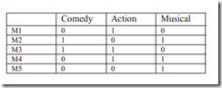

基于模糊聚类和协同过滤的混合推荐系统
转自 DM张朋飞 CNBlogs
Hybrid Recommender System based on Fuzzy Clustering and Collaborative Filtering
给出题目，想找的话直接在ElsevierSD里下载即可。
并不是逐句翻译，一些简单的背景比如经济啦什么的直接忽略，不过笔者会在博文里点出来。
一二三这样的标题是原论文的题目，我没翻译，为以后自己写英文论文做准备，以1234这样的标题开始的内容是笔者自己加上去的，就是我的笔记。
我自己把握不准的或者比较精妙的局段，都有英文原文留下，分段也被保留。
如何输入罗马数字，看下图，搜狗输入法下，ctrl+shift+z；有时候可能需要多个这样的符号，每次都这样调用的话很麻烦，我就按住ctrl键，果然可以一次多个，看来计算机是相通的。
Abstract
由于越来越多的电商使用推荐系统，推荐系统获得了极大发展。不过由于产品和用户数的显著增加使得推荐系统面临数据稀疏性和可扩展性的问题。本篇提出了FCM(Fuzzy C Means)算法。
Introduction
推荐系统结合电商背景介绍。NetFlix推荐电影，Amazon推荐图书。有几种不同的方法来做推荐，这包括给出销量最高的产品列表、基于人口统计学给我出建议和通过分析用户过去行为来给出建议(including providing top list of items, making suggestion based on demographic data and making recommendation by analyzing past user interaction of the user with the system.)。在这之中，协同过滤是最好的技术之一，该技术于1992年由[Goldberg et al., 1992]提出(我以Goldberg为关键字百度之，只出现摔跤运动员，对于这么吊的算法思想来说，这很不合理啊)。通常来说，推荐系统被分为三类，协同过滤、基于内容的推荐和混合推荐。基于内容的推荐使用过去的产品或者用户的描述信息(the item or user’s profile)，因此当产品是像视频、音乐这类东西的话，该算法会很不方便得到需要的信息(原文是be quite challenging)。
在协同过滤算法(下文用CF来代替，太麻烦，我自己加上的)中，关键元素是用户过去的行为。CF推荐系统采用由用户制作的原来产品的排名来预测新产品的排名(笔者感觉这很像是Item-Based的CF算法，请参考笔者这一篇博文探秘推荐引擎之协同过滤算法小综述)。这种算法思想是根据(The idea behind this is that)两个用户曾经喜欢过想死产品的话那么他们很可能继续喜欢同样的产品(这一句又像是User-Based)。在建议的的方法中(proposed approach)，初试聚类中心采用FCM算法生成。然后这些中心采用item-based来预测未来的产品排名。
相关工作在区域 Ⅱ，区域Ⅲ详细讨论了建议的方法，实验结果在区域Ⅳ讨论，结论呈现在区域Ⅴ。
基于人口统计学的推荐
这是最为简单的一种推荐算法，它只是简单的根据系统用户的基本信息发现用户的相关程度，然后将相似用户喜爱的其他物品推荐给当前用户。
系统首先会根据用户的属性建模，比如用户的年龄，性别，兴趣等信息。根据这些特征计算用户间的相似度。比如系统通过计算发现用户A和C比较相似。就会把A喜欢的物品推荐给C。
优势：
a 不需要历史数据，没有冷启动问题
b 不依赖于物品的属性，因此其他领域的问题都可无缝接入。
不足：
算法比较粗糙，效果很难令人满意，只适合简单的推荐
基于内容的推荐
与上面的方法相类似，只不过这次的中心转到了物品本身。使用物品本身的相似度而不是用户的相似度。
系统首先对物品（图中举电影的例子）的属性进行建模，图中用类型作为属性。在实际应用中，只根据类型显然过于粗糙，还需要考虑演员，导演等更多信息。通过相似度计算，发现电影A和C相似度较高，因为他们都属于爱情类。系统还会发现用户A喜欢电影A，由此得出结论，用户A很可能对电影C也感兴趣。于是将电影C推荐给A。
优势：
对用户兴趣可以很好的建模，并通过对物品属性维度的增加，获得更好的推荐精度
不足：
a 物品的属性有限，很难有效的得到更多数据
b 物品相似度的衡量标准只考虑到了物品本身，有一定的片面性
c 需要用户的物品的历史数据，有冷启动的问题
看完2我发现，冷启动问题指的就是建模的初始数据的来源问题，看来书真是阅读越明白，所以温故而知新，古人没有欺骗我—古之人诚不欺余也。
Related Work
在参考文献3里，作者提出了一种基于用户和产品之间不同的CF算法。首先，他们(用的they，表示作者不止一个的意思吧)比较了不同的CF算法。根据他们的方法，他们没有考虑用户和产品知己恩的联系，只考虑(other than)了不同之处。在这种情况下，有一些用户倾向于给好评，对那些真正的垃圾产品才给差评；而其他用户给最好的产品最高的评价，对于其他的产品倾向于给差评(On the condition that there are some users, who inclined to give positive rating, leaving negative ratings for really bad items, while other user, save their highest rating s for the best item and tends to give negative ratings. So according to their approach, first find the tendencies of items and users and on the basis of this, recommendation is done.刚开始翻译不出来参考了百度翻译，就翻译了出来；我想起了英语老师说咱们口语不好不是因为搞几次会不会，而是因为很多低级词汇忘了；我真是个听话的孩子，好老师说的话我基本都记得，感觉自己萌萌哒)。因此根据他们的方法(approach)，首先找到产品和用户的趋势，据此，推荐完成。
在参考文献11里，作者提出了混合的方法，该方法结合了(take advantages of)基于内容和CF的优点。根据他们的方法，他们首先采用k-means算法找到相似的用户(笔者认为这地方没说清楚，根据用户买的产品类别还是用户的个人注册信息，不过就笔者个人感觉而言，对于非社交群体，比如电商企业，用户的注册信息完全没有价值)；然后，找到同一簇中高度相关用户的内容(感觉内容量子很别扭then find the content that the users of the same cluster rated high)。添加这一内容进入内容列表中，然后在同一簇中就要求的内容采用FCM算法找到内容。最后，从珍贵(我在想，他是不是写错了previous：前一个，写成了precious)的两个已经计算的集合找出公共部分(Add this content in the list of contents and then apply fuzzy c-mean algorithm to find contents in the same cluster as that of the content requested. And in the end find common set from precious two computed set. 我不理解两个已经计算的集合是什么)。公共部分就是最好的结果。算了，确实看不明白，有空看原文。
在参考文献15中，作者针对个性化推荐提出了一种相反的CF算法。根据他们的方法，他们结合user-based和item-based算法，同时使用斯皮尔曼等级相关系数代替皮尔逊相关系数来确保在数据的逻辑区域有相同的空间(或者等距，equal space)，这不必要成对出现从正态分布(which do not need to be receive in pairs from the normal distribution)。根据这个算法，CF算法预测相似的产品集根据已经给的数据，然后使用第二个算法得到最终的分配，同时解决奇异的数据(
singular data)。
斯皮尔曼相关系数
在此例中，我们要使用下表所给出的原始数据计算一个人的智商 和其每周花在 电视上的小时数的相关性。
首先，我们必须根据以下步骤计算出 d^2_i，如下表所示。
排列第一列数据 (X_i)。 创建新列 x_i 并赋以等级值 1,2,3,…n。
然后，排列第二列数据 (Y_i). 创建第四列 y_i 并相似地赋以等级值 1,2,3,…n。
创建第五列 d_i 保存两个等级列的差值 (x_i 和 y_i).
创建最后一列 d^2_i 保存 d_i 的平方.
得 ρ = −0.175757575，这个值很小表明上述两个变量的关系很小。
该系数和皮尔逊的区别是xy可以不是正态分布；但是xy不也可以进行标准花么((x-u)/D)，然后可以用皮尔逊系数了。
ProposedApproach
算法被分为两个阶段(phase)。
阶段一：根据产品信息进行产品聚类
阶段二：对阶段一的每个簇应用基于项目的CF。
算法概述。
步骤一：根据产品信息进行产品聚类(笔者认为说的很不直观，聚类的结果是什么，只是产品还是包括用户)
步骤二：在用户项目矩阵中对于每个簇应用基于项目的CF来预测丢失的评分。
步骤三：为了减少冷启动的问题，新用户(NU)：必须给在给定阈值数量的产品的评分来做推荐。新产品(NI)：用户U对于新产品的评分经由NI(U)的评分=用户U在该簇中的评分平均值(To reduce the Cold Start problem.New User: Rating must be given on the specific (threshold)number of items to get recommendation.New Item (NI) : Rating of new item by user U is given byRating of NI(U) = Average rating of the user U within thatcluster.)。这是不是在说SlopeOne算法，前面提到的博文里对该算法有介绍。
步骤四：为了降低可扩展性的问题，聚类是预先处理步骤。该算法周期性运行或者当超过给定阈值数量额产品被加入时该算法被触发(Clustering is pre-processing step. This algorithm is runperiodically or triggered after some particular (threshold)number of new items add in the system.)。
阶段一：聚类
K-means
笔者注：下面只做简单翻译
采用k-means算法(原文是k-mean，是不是笔误)。Movielens数据集包括来自943个用户的评分分为1到5等级的10w个评分，该数据集也包括每个电影的大致信息(profile)，比如类型(genre[ˈʒɒnrə])（喜剧、动作等），类型共19种。在电影的类型上做聚类。在划分好的k个簇上上应用基于项目的CF算法。
下面就是k-means的步骤了，不再翻译。
假设10个电影(Assume)，每个电影经由三种类型来描述(喜剧、动作、音乐片)，如表1(为毛没加上章的信息，写成表3-1)。

使用曼哈顿距离来计算电影之间的相似性或者不想实行。
笔者注：曼哈顿距离与欧氏距离：红 蓝和黄分别表示曼哈顿距离都拥有一样的长度12.绿色表示欧式距离 6*1.414=8.48的长度。
笔者感觉这个图很直观，妙处自己体会。
结果是表2
FCM
先介绍
生成如下表
假设阈值是0.15
C。减少冷启动问题
新用户未做任何评价，新产品未收到任何评价。
a.新用户必然要评价超过阈值数量的产品。
b.
if new item add in the system: rating of new item M,by user U is given by:上面的式子Where右端第一部分 average of user U in cluster c. And右端第二部分 is membership value of new item M to cluster c。
阶段二：基于项目的CF
笔者注：未做逐字逐句翻译。
由于当数据达到百万级时，user-based算法寻找像是用户的CF的计算复杂度太大。 所以2001年提出了item-based算法。
该阶段把第一阶段的输出作为输入，对每个簇用基于项目的CF算法。
采用皮尔逊相关系数离线计算ij之间的相似度。
U是同时评价过i和j的用户集，带上划线的是评价过该项产品的所有用户评分的均值。
由于FCM是模糊聚类，那么问题来了当一个产品同时属于两个或多个簇时，评分公式如下，
Nc是簇个数，分子是a对i在簇c下的评分，实际上就是求各个簇下的均值。写到这，笔者认为，所谓论文就是把简单问题复杂化，通俗名词专业化。
Experiment Results
CF的评价准则有统计学准则和决策支持准则，本文采用前者。统计学准则比较预测值和实际值的分离程度，采用MAE（mean absolute error），
，下面第二个图x是指数据量的大小，单位是10w。
Conclusion
结合CF和FCM解决数据稀疏性和冷启动问题。
提出的方法是基于记忆的方法，因此不需要花费时间来训练数据(这个不懂，可能看的资料不够吧，我感觉是不就是说增量)。
笔者自己
四点半左右去听了一个讲座，小公司注重你的技术，要能立刻上手；大公司注重基础，愿意培养你，所以跟一个大牛，他跳槽了，也把你带走了。